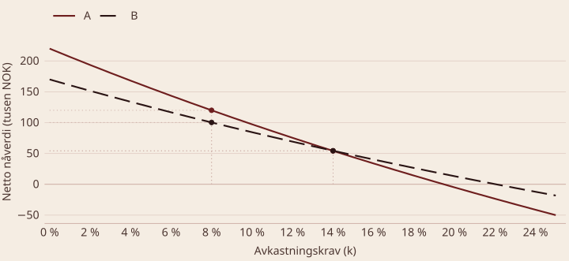

BED3 — Investering og finans · Forelesning 1
Norges Handelshøyskole
Eiendeler og tid
Eksempler på eiendeler:
Definisjon — eiendel En eiendel er en sekvens av kontantstrømmer: \text{Eiendel}_t = \{CF_t,\, CF_{t+1},\, CF_{t+2},\, \dots\}
Viktig Nåverdi handler om å veksle penger mellom ulike tidspunkter, på samme måte som valutakurser veksler penger mellom geografiske områder.
Nåverdi og internrente
Definisjon — verdiskaping Å akseptere økonomisk bærekraftige, altså lønnsomme, investeringsprosjekter.
Netto nåverdi (NNV)
Internrente (IRR)
Tilbakebetalingstid (payback)
Definisjon — netto nåverdi (NNV)
NNV = -I_0 + \sum_{t=1}^{T} \frac{CF_t}{(1+k)^t}
Tolkning
NNV måler absolutt verdiskaping, uavhengig av prosjektets størrelse eller kompleksitet.
Q1: Hva er formålet med å beregne netto nåverdi? Nåverdien viser hvor mye verdi et prosjekt tilfører i dag, etter at framtidige kontantstrømmer er diskontert til nåtid.
Q2: Hva skjer med NNV hvis avkastningskravet k øker? Hvorfor? Framtidige kontantstrømmer diskonteres hardere, og nåverdien faller.
Q3: Kan et prosjekt med NNV < 0 likevel være en god investering? Potensielt, hvis prosjektet har strategiske fordeler eller eksternaliteter som modellen ikke fanger opp — for eksempel overgang til mer miljøvennlige løsninger, eller inngang i et nytt marked.
Definisjon — internrente (IRR) Internrenten er den rentesatsen y som gjør netto nåverdi lik null:
0 = -I_0 + \sum_{t=1}^{T} \frac{CF_t}{(1+y)^t}
Tolkning
Bruk IRR til å sammenligne investeringer — men husk at den kan gi feil beslutning når prosjektene har ulik størrelse eller varighet.
Spørsmål — hva er IRR? Du investerer I_0 = 1\,000 kr og forventer kontantstrømmene CF_1 = 500 og CF_2 = 600.
0 = -1\,000 + \frac{500}{(1+y)^1} + \frac{600}{(1+y)^2}
Vi hadde I_0 = 1\,000 kr, kontantstrømmene CF_1 = 500 og CF_2 = 600, og IRR = 6{,}39\ \%.
Nåverdiene diskontert med IRR summeres til I_0:
\frac{500}{1{,}0639} + \frac{600}{1{,}0639^{2}} = 1\,000
Framtidsverdien av I_0 og av kontantstrømmene, forrentet med IRR, blir det samme:
1\,000 \cdot 1{,}0639^{2} = 1\,131{,}971 \qquad 500 \cdot 1{,}0639 + 600 = 1\,131{,}971
Kombiner IRR med andre metoder, som netto nåverdi, for å få et mer pålitelig beslutningsgrunnlag.
Q1: Hva er definisjonen av internrente? Den rentesatsen som gjør netto nåverdi lik null.
Q2: Hvordan brukes internrenten til å vurdere lønnsomhet? Er internrenten større enn avkastningskravet, er prosjektet lønnsomt.
Q3: Hvilke begrensninger har internrente som beslutningskriterium? Flere fortegnsskift kan gi flere IRR-verdier; ulik størrelse eller varighet fanges ikke opp, siden IRR ikke måler absolutt verdiskaping; og reinvestering til IRR er ofte urealistisk.
Definisjon — nåverdiprofil En nåverdiprofil viser sammenhengen mellom avkastningskravet k og netto nåverdi for et prosjekt.
| År | 0 | 1 |
|---|---|---|
| Kontantstrøm A | −1 130 | 1 350 |
| Kontantstrøm B | −771 | 941 |
Kontantstrømmer for prosjekt A og B, i tusen kroner.
Beregning av nåverdien for A ved k = 8\ \%:
NNV_{A} = -1\,130 + \frac{1\,350}{1{,}08} = \mathbf{120}
| Rentesats k | NNV A | NNV B | Kommentar |
|---|---|---|---|
| 0 | 220 | 170 | Summere uten å diskontere |
| 8 % | 120 | 100 | |
| 14 % | 54 | 54 | Profilene krysser hverandre |
| 20 % | −5 | 13 | Omtrent null for A |
| 22 % | −23 | 0 | Internrenten for B |
| \infty | −1 130 | −771 | Lik investeringsbeløpet |
Netto nåverdi for prosjekt A og B ved ulike rentesatser, i tusen kroner.

Prosjekt A har høyere NNV ved lav k · prosjekt B blir mer lønnsomt ved høyere k. Profilene krysser hverandre ved 14 %.
Q1: Hva viser skjæringspunktet mellom profilen og x-aksen? Den rentesatsen der netto nåverdi er null — altså internrenten.
Q2: Hvorfor er prosjekt B mer lønnsomt enn A ved høyere rentesatser? B har mindre kontantstrømmer senere i tid, og disse diskonteres mindre hardt når rentesatsen stiger.
Q3: Hva sier profilene om risikoen i de to prosjektene? Prosjekt A er mer følsomt for endringer i rentesatsen, noe som indikerer høyere risiko knyttet til de større framtidige kontantstrømmene.
Annuitet, nåverdi-indeks og økonomisk levetid
Definisjon — annuitetsmetoden Fordeler netto nåverdi jevnt over prosjektets levetid, som årlige betalinger.
\text{Annuitet} = NNV \cdot A_{k,T}^{-1} = NNV \cdot \frac{k\,(1+k)^{T}}{(1+k)^{T} - 1}
Bruksområde
Eksempel NNV = 300\,000 NOK · avkastningskrav k = 10\ \% · levetid T = 5 år
A = \frac{300\,000 \cdot 0{,}1 \cdot (1+0{,}1)^{5}}{(1+0{,}1)^{5} - 1} = 79\,139 \text{ NOK per år}
Prosjektet skaper altså en årlig verdi på 79 139 NOK over fem år.
Definisjon — nåverdi-indeks (PVI) Viser hvor mye verdi et prosjekt skaper per investert krone: \text{PVI} = \frac{NNV}{I_0}
Tolkning
Bruksområde
Eksempel NNV = 25\,000 NOK · I_0 = 150\,000 NOK
\text{PVI} = \frac{25\,000}{150\,000} = 0{,}167 > 0
Nåverdi-indeksen er større enn null, og prosjektet er derfor lønnsomt.
Definisjon — økonomisk levetid Den perioden et prosjekt eller en eiendel bør beholdes for å maksimere netto nåverdi.
Hvordan bestemmes den? Beregn NNV for ulike levetider, og identifiser den levetiden som gir høyest NNV.
Bruksområde: nyttig når det skal tas beslutninger om forlengelse eller utskifting. Relevante faktorer er vedlikeholdskostnader, inntekter og teknologisk utvikling.
Eksempel En maskin har vedlikeholdskostnader som øker med 20 000 NOK per år, og årlige inntekter som faller med 10 000 NOK per år. Diskonteringsrenten er k = 10\ \%.
Analyse:
Er NNV høyest ved fire år, bør maskinen byttes ut etter fire år.
Q1: Hva måler nåverdi-indeksen? Hvor mye verdi prosjektet skaper per investert krone. En positiv indeks betyr at prosjektet skaper mer verdi enn det koster.
Q2: Hvorfor er annuitetsmetoden nyttig ved ulik levetid? Den fordeler netto nåverdi som like store årlige beløp, og gjør dermed prosjekter med ulik levetid sammenlignbare.
Q3: Hva påvirker beregningen av økonomisk levetid? Vedlikeholdskostnader, teknologisk utvikling og framtidige inntekter. Usikkerhet håndteres med følsomhets- og scenarioanalyse.
1. Nåverdi
2. Internrente
3. Nåverdiprofil
4. Supplerende metoder